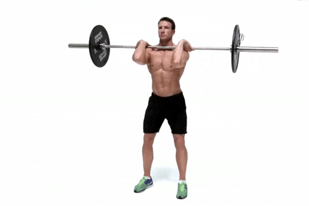

Front thigh
It is a workout that can give strong target to the muscles in front of your thighs with the
barbell on your front shoulder!
Starting Position
1. Begin by standing with your feet shoulder-width apart, and place a barbell in front of your
shoulders, resting on the front of your deltoids. Hold the bar with a clean grip, elbows
pointing forward.
2. Lower your body by bending at the hips and knees, keeping your back straight and chest up.
Aim to bring your thighs parallel to the ground or lower, maintaining a neutral spine.
3. Push through your heels and drive your hips forward to return to the starting position. Keep
your core engaged throughout the movement.